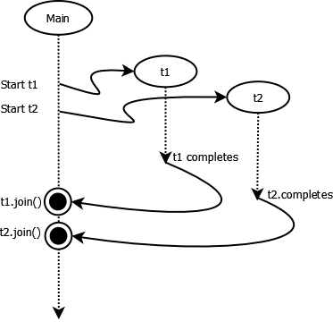

2. Programació multifil
1. Introducció
Els threads, fils d’execució o processos lleugers, són les unitats més menudes de processament que pot ser programada pels sistemes operatius, i que permet a un mateix procés, executar diferents tasques de forma simultània. Cada fil d’execució executa una tasca concreta, i ofereix així al programador la possibilitat de dissenyar programes que executen funcions diferents de forma concurrent.
Aquesta tècnica de programació amb fils es coneix com multithreading o multifil, i permet simplificar el disseny d’aplicacions concurrents i millorar el rendiment en la creació de processos.
Recordeu que la principal diferència entre els processos i els fils és que els fils d’un mateix procés comparteixen els mateixos recursos (memòria, fitxers oberts…). Així doncs, quan creem diversos objectes d’una mateixa classe, pot que diversos fils d’execució accedisquen a una dada o objecte concret. Diem, en aquest cas, que la dada o objecte està en conflicte, i a la secció de codi que accedeix a aquestes dades o objectes, li diem secció crítica.
Alguns dels exemples més habituals a les que es fa ús de fils d’execució, poden ser les aplicacions multimèdia i les aplicacions client-servidor.
2. Threads en Java
2.1. Creació de threads
Per tal de crear threads en Java podem optar per dues opcions:
- Crear una classe que herete de la classe Thread, o bé
- crear una classe que implemente la interfície Runnable.
L'opció aconsellada a la documentació de Java és fer ús de la interfície Runnable. Ambdós mecanismes són pràcticament equivalents, amb la diferència que si fem la nostra classe descendent de Thread, per les característiques de Java, aquesta no pot heretar d’altra classe, pel que si volem que la nostra classe pertanga a certa jerarquia i a més tinga les característiques dels Threads, hem d’utilitzar interfícies.
Per crear un thread mitjançant la implementació de Runnable, farem el següent:
- Definir una classe que implemente la interfície
Runnablei el mètodepublic void run(), amb la funcionalitat que s’haurà d’executar en el fil:
class classeThreadable implements Runnable{
// Declaració d'atributs i mètodes
@Override
public void run() {
// Funcionalitat a realitzar
}
}
}
- Crear un thread a partir de la classe anterior:
Thread fil=new Thread(classeThreadable);
El més habitual serà emmagatzemar els diferents threads en un vector en lloc de fer-ho en un objecte solt:
// Creem el vector vetor_fils, per emmagatzemar els diferents fils d'execució
Thread vector_fils[]=new Thread [longitud];
...
// I després creem els diferents threads en la corresponent posició del vector:
Thread fil=new Thread(vector_fils[posició]);
vector_fils[posicio_i]=fil; // Sent i un índex qualsevol del vector
- Llançar el thread amb
start()i esperar-lo ambjoin():
fil.start();
// O bé, si el tenim al vector
vector_fils[posicio].start();
// ...
fil.join();
// O bé
vector_fils[posicio].join();
start() i run()
Si ens adonem, per crear el thread, hem fet ús del mètode start(), i la classe que implementa Runnable, defineix un mètode run(). Quina relació hi ha entre estos dos mètodes?
El mètode run(), que és el que definim nosaltres a la classe, conté el codi que volem executar asíncronament en un thread que llançarem posteriorment. Si invocàrem run() directament, el mètode s’executaría de forma síncrona (en el mateix thread en què estem), mentre que si la nostra és una subclasse de Thread o implementa Runnable, el mètode start() ens crea el fil i fa que en un moment donat, el fil d’execució llance el mètode run() de forma asíncrona, tornant de seguida el control al fil actual, i deixant el nou thread executant el que hi havera al codi de run() fins que aquest acabe.
join()
Parem especial atenció al join. Tots els programes multifil tenen un fil principal que ha d’esperar que acaben els fils associats, per a la qual cosa utilitzem el mètode join. Pe què s’anomena així? Quan creem un thread, es produeix una bifurcació, es creen dos camins d’execució diferents, pel que quan un procés acaba i ha d’esperar a l’altre, es produeix una unificació, un join.

Altres mètodes de la class thread
Veiem a la següent taula una síntesi dels mètodes comentats i altres mètodes utilitzats en la gestió de threads:
| Mètode | Descripció |
|---|---|
long getId() |
Retorna l’identificador del thread, consistent en un enter llarg positiu generat automàticament en la creació del fil. Aquest número és únic i inalterable durant el cicle de vida del thread |
void setName(String Nom) |
Permet donar-li un nom al thread |
String getName(String Nom) |
Retorna el nom que li hem assignat al thread |
Thread currentThread() |
Retorna un objecte de la classe Thread que representa el fil d’execució actual. |
void setPriority(int prioritat) |
Permet establir la prioritat del fil, de forma indicativa, ja que el sistema operatiu no està obligat a respectar-la. La prioritat màxima i mínima venen donades per les constants MAX_PRIORITY i MIN_PRIORITY. |
int getPriority() |
Retorna la prioritat del fil |
void Thread.sleep(long ms) |
Permet deixar el procés en suspensió durant un temps concret |
void join() |
Finalitza el fil d’execució, tornant el control al fil principal que va llençar el fil secundari, amb la possibilitat d’escollir el temps d’espera en mil·lisegons |
void yield() |
Torna a un procés a l’estat de llest per executar, de manera que permet que passen a executar-se altres fils de la mateixa prioritat (però no posa en pausa el fil) |
void interrupt() |
Interromp l’execució del fil |
boolean interrupted() |
Retorna si el fil actual ha estat interromput |
boolean isAlive() |
Retorna cert si el fil està viu |
public Thread.State getState() |
Retorna l’estat del fil, que pot ser NEW, RUNNABLE, BLOCKED, WAITING, TIMED_WAITING, TERMINATED |
String toString() |
Heratat d’Object, retorna una cadena amb una representació del thread, incloent-hi el nom, la prioritat i el grup |
Podem trobar més informació sobre la classe Thread i la resta de mètodes relacionats amb ella a la documentació de l’OpenJDK:
2.2. Exemples
Exemple 1
El següent programa exemple1.java crea una classe que rep un nom en el constructor i l’emmagatzema, i que implementa un mètode run() que obté informació sobre el thread actual (l’id, el nom del thread i l’atribut nom de la classe -que no són el mateix-), i els mostra per pantalla. Finalment, el mètode main() crea tres objectes i tres fils diferents i els llança en paral·lel.
public class exemple1 implements Runnable {
/*
Exemple tipus "Hola Món" amb threads
*/
String nom;
// Constructors
exemple1(){ this.nom="Anònim"; }
exemple1(String nom){this.nom=nom; }
@Override
public void run() {
// Aquest és el mètode que s'exeutarà quan
// s'invoque al mètode start del thread.
try{
// Agafem la referència al thread actual
Thread filActual=Thread.currentThread();
// I imprimim informació sobre el seu nom i algunes propietats
System.out.println("Hola Món dels threads. Sóc "+this.nom+":"
+"\n\tEl meu id de thread és "+filActual.getId()
+"\n\tEl nom de thread és "+filActual.getName()
+"\n\tLa meua prioritat és "+filActual.getPriority()+"\n");
} catch (Exception e) {
e.printStackTrace();
}
}
public static void main(String[] args) {
try{
// Creem alguns objectes d'exemple
exemple1 ex1=new exemple1("C3PO");
exemple1 ex2=new exemple1("R2D2");
exemple1 ex3=new exemple1("BB8");
// I els fils corresponents
Thread fil1=new Thread(ex1);
Thread fil2=new Thread(ex2);
Thread fil3=new Thread(ex3);
// Llancem els fils
fil1.start();
fil2.start();
fil3.start();
// I els juntem amb l'actual quan acaben
fil1.join();
fil2.join();
fil3.join();
}catch(Exception e){
e.printStackTrace();
}
}
}
L’eixida del programa serà:
$ java exemple1
Hola Món dels threads. Sóc BB8:
El meu id de thread és 13
El nom de thread Thread-2
La meua prioritat 5
Hola Món dels threads. Sóc C3PO:
El meu id de thread és 11
El nom de thread Thread-0
La meua prioritat 5
Hola Món dels threads. Sóc R2D2:
El meu id de thread és 12
El nom de thread Thread-1
La meua prioritat 5
Exemple 2
En aquest exemple, hem fet una variació de l’anterior, per tal que reba una llista de noms com a arguments, i cree tants fils com hem indicat, fent ús de vectors per emmagatzemar els objectes i els threads.
public class exemple2 implements Runnable {
/*
Exemple tipus "Hola Món" amb threads i vectors
*/
String nom;
// Constructors
exemple2(){ this.nom="Anònim"; }
exemple2(String nom){this.nom=nom; }
@Override
public void run() {
// Aquest és el mètode que s'exeutarà quan
// s'invoque al mètode start del thread.
try{
// Agafem la referència al thread actual
Thread filActual=Thread.currentThread();
// I imprimim informació sobre el seu nom i algunes propietats
System.out.println("Hola Món dels threads. Sóc "+this.nom+":"
+"\n\tEl meu id de thread és "+filActual.getId()
+"\n\tEl nom de thread és "+filActual.getName()
+"\n\tLa meua prioritat és "+filActual.getPriority()+"\n");
} catch (Exception e) {
e.printStackTrace();
}
}
public static void main(String[] args) {
try{
// Definim un vector per emmagatzemar els threads
Thread[] LlistaThreads=new Thread[args.length];
for (int i=0;i<args.length;i++){
// Creem l'objecte
exemple2 nom=new exemple2(args[i]);
// I el thread que l'utilitza
LlistaThreads[i]=new Thread(nom);
// I el llancem
LlistaThreads[i].start();
}
// Una vegada llançats, els juntem tots
for (int i=0;i<args.length;i++){
LlistaThreads[i].join();
}
}catch(Exception e){
e.printStackTrace();
}
}
}
En aquest cas, l’eixida serà:
$ java exemple2 Leia Luke Han Chewie
Hola Món dels threads. Sóc Luke:
El meu id de thread és 12
El nom de thread és Thread-1
La meua prioritat és 5
Hola Món dels threads. Sóc Han:
El meu id de thread és 13
El nom de thread és Thread-2
La meua prioritat és 5
Hola Món dels threads. Sóc Leia:
El meu id de thread és 11
El nom de thread és Thread-0
La meua prioritat és 5
Hola Món dels threads. Sóc Chewie:
El meu id de thread és 14
El nom de thread és Thread-3
La meua prioritat és 5
Exemple 3
En el següent exemple, veiem la classe que implementa el main pot ser diferent a la classe que implementa Runnable. A més, en aquest exemple, hem fet ús també del sleep, per fer una xicoteta pausa abans que acabe el thread, i mostrar un missatge de comiat:
class Saluda implements Runnable {
/*
Exemple tipus "Hola Món" amb threads i vectors
*/
String nom;
// Constructors
Saluda(){ this.nom="Anònim"; }
Saluda(String nom){this.nom=nom; }
@Override
public void run() {
// Aquest és el mètode que s'exeutarà quan
// s'invoque al mètode start del thread.
try{
// Agafem la referència al thread actual
Thread filActual=Thread.currentThread();
// I imprimim informació sobre el seu nom i algunes propietats
System.out.println("Hola Món dels threads. Sóc "+this.nom+":"
+"\n\tEl meu id de thread és "+filActual.getId()
+"\n\tEl nom de thread és "+filActual.getName()
+"\n\tLa meua prioritat és "+filActual.getPriority()+"\n");
filActual.sleep(1000);
System.out.println("Eixint de "+this.nom);
} catch (Exception e) {
e.printStackTrace();
}
}
}
public class exemple3 {
public static void main(String[] args) {
try{
// Definim un vector per emmagatzemar els threads
Thread[] LlistaThreads=new Thread[args.length];
for (int i=0;i<args.length;i++){
// Creem l'objecte
Saluda nom=new Saluda(args[i]);
// I el thread que l'utilitza
LlistaThreads[i]=new Thread(nom);
// I el llancem
LlistaThreads[i].start();
}
// Una vegada llançats, els juntem tots
for (int i=0;i<args.length;i++){
LlistaThreads[i].join();
}
}catch(Exception e){
e.printStackTrace();
}
}
}
L’eixida és:
$java exemple3 Leia Luke Han Chewie
Hola Món dels threads. Sóc Han:
El meu id de thread és 13
El nom de thread és Thread-2
La meua prioritat és 5
Hola Món dels threads. Sóc Luke:
El meu id de thread és 12
El nom de thread és Thread-1
La meua prioritat és 5
Hola Món dels threads. Sóc Chewie:
El meu id de thread és 14
El nom de thread és Thread-3
La meua prioritat és 5
Hola Món dels threads. Sóc Leia:
El meu id de thread és 11
El nom de thread és Thread-0
La meua prioritat és 5
Eixint de Leia
Eixint de Luke
Eixint de Chewie
Eixint de Han
Si l’executem, comprovarem com entre l’últim Hola Mon i els missatges de “Eixint de…” passa una estona.
3. Mètodes sincronitzats: Synchronized
Quan ens trobem davant la necessitat de comunicar fils, tenim diverses possibilitats. Una d’elles serà fer ús d’un objecte compartit.
Anem a reprendre un exemple conegut: Obtindre la suma de tots els nombres naturals entre dos índexs donats, dividint el procés en tants fils com processadors tinga la màquina.
Per a això, farem ús d’una classe Acumulador, que únicament acumularà les diferents sumes parcials que vagen realitzant-se. Aquest objecte estarà compartit entre els diferents threads:
class Acumulador{
long acumulador=0;
Acumulador(){};
long get(){
return this.acumulador;
}
void set(long quantitat){
System.out.println("Actualitzant comptador a "+quantitat);
this.acumulador=quantitat;
}
}
Com veiem té el constructor, i dos mètodes per obtenir (get) i establir (set) el valor de l’acumulador.
Ara anem a crear la classe suma, que serà qui implemente la interfície Runnable i definisca el mètode run:
class Suma implements Runnable {
long n1;
long n2;
Acumulador ac;
// Constructors
Suma(){
this.n1=0;
this.n2=0;
}
Suma(long n1, long n2, Acumulador ac){
this.n1=n1;
this.n2=n2;
this.ac=ac;
}
@Override
public void run() {
long result=0;
try{
Thread filActual=Thread.currentThread();
System.out.println("Iniciant el fil"+filActual.getName()+": Suma ("+this.n1+","+this.n2+")");
for (long i=this.n1;i<=this.n2;i++){
result=result+i;
}
long acTmp=ac.get();
Thread me=Thread.currentThread();
me.sleep(500);
System.out.println("Finalitzat el fil"+filActual.getName());
System.out.println("Resultat del fil: "+result);
ac.set(acTmp+result);
} catch (Exception e) {
e.printStackTrace();
}
}
}
En aquesta classe tenim:
- El constructor
Suma(long n1, long n2, Acumulador ac), que inicialitzarà la classe amb els dos índexs que cal sumar i un objecte acumulador. - El mètode
run(), que mostrarà diferents missatges, i serà qui realitze la suma entre els dos índexs indicats. Quan tinga el resultat, agafarà el valor actual del comptador (long acTmp=ac.get()) i l’actualitzarà, acumulant la suma parcial (ac.set(acTmp+result)). Com podem veure, entre elgeti elsetafegim de forma intencionada una pausa de 0,5 segons. Açò és per emular un processament més costós, i ens servirà per il·lustrar el problema que presenta aquesta solució.
Finalment, implementem la classe principal sumaThreadsErr, que serà qui cree l’objecte acumulador i tants fils com processadors tinguem, dividint la feina entre aquests fils, i passant-los l’acumulador per tal d’emmagatzemar la suma total:
public class sumaThreadsErr {
public static void main(String[] args) {
// Capturem els paràmetres
Long index1=Long.parseLong(args[0]);
Long index2=Long.parseLong(args[1]);
// Creem l'acumulador
Acumulador ac=new Acumulador();
try{
// Ordenem els índexs, per si el primer és major que el segon
if (index1>index2){
Long tmp=index1;
index1=index2;
index2=tmp;
}
// Particionem el rang de valors en tants rangs com processadors tenim
// Calculem primer la quantitat de processadors
Runtime runtime=Runtime.getRuntime();
int num_processadors=runtime.availableProcessors();
System.out.println("Dividint la tasca en "+num_processadors+" fils");
// Obtenció dels rangs
Long increment=((index2-index1)/(num_processadors-1));
// Creació del vector de fils
Thread vectorFils[]=new Thread[num_processadors];
for (int i=0; i<num_processadors; i++){
// Creem un objecte de tipus Suma, que és threadable
long ini=index1+increment*i;
long fin=index1+increment*(i+1)-1;
if (fin>index2) fin=index2;
Suma sumParcial=new Suma(ini,fin, ac);
// I creem i llancem el fil
vectorFils[i]=new Thread(sumParcial);
vectorFils[i].setName("Fil "+i);
vectorFils[i].start();
}
for (int i=0; i<num_processadors; i++) vectorFils[i].join();
System.out.println("Suma total: "+ac.get());
}catch(Exception e){
e.printStackTrace();
}
}
}
Fixeu-se que el join l’hem de fer en un bucle fora del bucle principal. Recordeu que el join atura el thread actual a l’espera que el thread indicat acabe, per “juntar”, ambdós fils. Així, si l’incloem dins el bucle principal en el que estem creant els threads, en cada iteració hauria d’esperar que el thread fill acabara, pel que estaríem llançant els threads en sèrie, i no en paral·lel. De la manera com hem fet, llancem els threads i ens esperem després.
Anem a analitzar ara el resultat:
$ javac sumaThreadsErr.java
$ java sumaThreadsErr 1 100
Dividint la tasca en 4 fils
Iniciant el filFil 2: Suma (67,99)
Iniciant el filFil 0: Suma (1,33)
Iniciant el filFil 3: Suma (100,100)
Iniciant el filFil 1: Suma (34,66)
Finalitzat el filFil 1
Finalitzat el filFil 2
Finalitzat el filFil 0
Finalitzat el filFil 3
Resultat: 561
Actualitzant comptador a 561
Resultat: 2739
Actualitzant comptador a 2739
Resultat: 100
Actualitzant comptador a 100
Resultat: 1650
Actualitzant comptador a 1650
Suma total: 1650
Fixeu-vos que cada actualització de l’acumulador estableix aquest al mateix valor que el resultat de la suma, en lloc d’acumular-lo. Per tant, el resultat és incorrecte!.
On ha estat el problema? En què amb la pausa de 500ms que hem introduït de forma deliberada, els processos agafen el valor de l’acumulador, i mig segon després l’actualitzen. En aquest mig segon poden passar moltes coses, com per exemple, que un altre thread haja actualitzat ja aquest comptador.
Reprenent un dels conceptes que s’han comentat al principi de la unitat, aquesta part del mètode run() que modifica el comptador és el que coneixeríem com secció crítica.
Per tant, com accedim als objectes comuns en la secció crítica de forma segura? Cal establir algun mecanisme perquè les operacions sobre aquests objectes es realitzen de forma atòmica, és a dir, que fins que no finalitze una operació sobre l’objecte, no en comence altra. Açò s’aconsegueix amb Synchronized.
Per tal de fer ús de Syncronized, podem fer dues coses:
- Declarar un mètode en la classe
Runnablecom asynchronized, i accedir a ell des del mètoderun(), o bé - Declarar una secció de codi
syncronyzed.
Optarem per aquesta última opció, ja que és preferible sincronitzar com menys part de codi millor, per qüestions d’eficiència (la part dins de la secció crítica no és paral·lelitzable). Així doncs, el següent fragment de codi:
long acTmp=ac.get();
Thread me=Thread.currentThread();
me.sleep(500);
System.out.println("Finalitzat el fil"+filActual.getName());
System.out.println("Resultat: "+result);
ac.set(acTmp+result);
S’hauría d’expressar així:
synchronized(ac){
long acTmp=ac.get();
Thread me=Thread.currentThread();
me.sleep(500);
System.out.println("Finalitzat el fil"+filActual.getName());
System.out.println("Resultat: "+result);
ac.set(acTmp+result);
}
Com veiem, el codi intern és el mateix, però ho hem afegit tot dins un bloc de codi amb synchronized(ac), indicant que ac és l’objecte compartit i protegit, al que s’ha d’accedir de forma atòmica.
Amb aquesta modificació, ja podem veure el correcte funcionament del programa:
$ javac sumaThreads.java
$ java sumaThreads 1 100
Dividint la tasca en 4 fils
Iniciant el filFil 1: Suma (34,66)
Iniciant el filFil 0: Suma (1,33)
Iniciant el filFil 2: Suma (67,99)
Iniciant el filFil 3: Suma (100,100)
Finalitzat el filFil 1
Resultat: 1650
Actualitzant comptador a 1650
Finalitzat el filFil 3
Resultat: 100
Actualitzant comptador a 1750
Finalitzat el filFil 2
Resultat: 2739
Actualitzant comptador a 4489
Finalitzat el filFil 0
Resultat: 561
Actualitzant comptador a 5050
Suma total: 5050
4. Coordinació de threads. El problema dels productors i consumidors
El problema del model productor-consumidor és un clàssic de la sincronització. Consisteix en el fet que existeix un thread que produeix dades, i un thread que les consumeix. El problema apareix quan el consumidor consumeix més de pressa que el que produeix el productor.
Com a exemple, veiem el següent programa, on disposarem d’un objecte compartit, al qual, una classe productora escriu valors i són consumits per una classe consumidora:
La classe ObjecteCompartit tindrà un atribut enter on guardarà un valor, i un booleà que indique la disponibilitat d’aquest. També implementa un mètode get, que retorna el valor que conté l’objecte i deixa en fals la disponibilitat d’aquest, ja que aquest ha estat consumit. El mètode set, estableix aquest valor, i indica que està disponible.
class ObjecteCompartit{
int valor;
boolean disponible=false; // Inicialment no tenim valor
int get(){
if (this.disponible) {
this.disponible=false;
return this.valor;
} else return -1;
}
void set(int val){
this.disponible=true;
this.valor=val;
}
}
Per la seua banda, les classes Productor i Consumidor, que seràn Runnable, s’inicialitzaran amb un objecte compartit, i en el seu mètode run(), tindran un bucle que escriurà i llegirà, respectivament, cinc valors en l’objecte compartit. Com podem veure, la classe Productor, farà una pausa de 500ms després de produir cada element, mentre que la classe Consumidor, la farà de 100ms.
class Productor implements Runnable{
// Referència a un objecte compartit
ObjecteCompartit compartit;
Productor(ObjecteCompartit oc){
this.compartit=oc;
}
@Override
public void run() {
for (int i=0; i<5; i++){
System.out.println("El productor produeix: "+i);
this.compartit.set(i);
try{
Thread.currentThread().sleep(500);
} catch (InterruptedException e){}
}
}
}
class Consumidor implements Runnable{
// Referència a un objecte compartit
private ObjecteCompartit compartit;
Consumidor(ObjecteCompartit oc){
this.compartit=oc;
}
@Override
public void run() {
for (int i=0; i<5; i++){
System.out.println("El consumidor consumeix: "+this.compartit.get());
try{
Thread.currentThread().sleep(100);
}catch (InterruptedException e){}
}
}
}
Finalment, la classe principal exempleProdCons crearà un thread amb el productor i altre amb el consumidor, i els llançarà:
public class exempleProdCons{
public static void main(String[] args) {
ObjecteCompartit oc=new ObjecteCompartit();
Thread p=new Thread(new Productor(oc));
Thread c=new Thread(new Consumidor(oc));
p.start();
c.start();
}
}
El resultat del programa és:
$ javac exempleProdCons.java
$ java exempleProdCons
El consumidor consumeix: -1
El productor produeix: 0
El consumidor consumeix: 0
El consumidor consumeix: -1
El consumidor consumeix: -1
El consumidor consumeix: -1
El productor produeix: 1
El productor produeix: 2
El productor produeix: 3
El productor produeix: 4
Quan l’eixida desitjable sería:
El productor produeix: 0
El consumidor consumeix: 0
El productor produeix: 1
El consumidor consumeix: 1
El productor produeix: 2
El consumidor consumeix: 2
El productor produeix: 3
El consumidor consumeix: 3
El productor produeix: 4
El consumidor consumeix: 4
És a dir, voldríem que el consumidor i el productor realitzaran la lectura i l’escriptura de forma coordinada.
Per aconseguir açò, el desitjable seria que quan el productor escriu en l’objecte compartit, avisara al consumidor, i quan l’objecte compartit estigués disponible per guardar valors, que avisara el productor. Açò s’aconsegueix amb els mètodes wait(), notify() i notiftAll().
| Mètode | Descripció |
|---|---|
void wait() |
Fa que el fil que l’invoque quede suspés fins que altre fil invoque al mètode notify() o notiftAll() |
void notify() |
Desperta a un dels fils que ha realitzat una crida a wait(). Si han segut diversos fils, només se’n tria un |
void notifyAll() |
Desperta tots els fils que estiguen esperant l’objecte |
Amb açò, l’única cosa que caldrà canviar serà l’accés a l’objecte compartit. Veiem-ho per parts.
- Quan el productor genera un resultat (fa un set), si l’objecte compartit encara té un valor que no s’ha consumit (per tant
disponible==true), haurà d’esperar que algú el consumisca, per tant haurà de fer unwait()fins que disponible siga fals, senyal que algú l’ha consumit:
while (disponible==true){
try{
wait();
}catch (InterruptedException e){}
}
Aquest bucle no està contínuament executant-se, sinò que s’espera al wait(). Quan altre fil realitza un notify(), es llança l’event InterruptedException, que capturem dins el bucle, de manera que fa que es “desperte”, del wait i torne a comprovar si la dada és disponible. Si la dada segueix estant disponible, tornem a esperar, i si ja no està disponible, podrem continuar, establint el valor de l’objecte compartit, indicant que hi ha dades disponibles, i avisant a tots els possibles consumidors que estigueren esperant:
this.valor=val;
this.disponible=true;
notifyAll();
- Quan el consumidor haja de consumir un valor (fa un get) de l’objecte compartit, el mètode get ha d’assegurar que hi haja algun valor disponible, de manera que estarà adormit (
wait()) fins que hi haja alguna dada disponible (disponible==true).
while (disponible==false){
try{
wait();
}catch (InterruptedException e){}
}
Una vegada hi hagen dades disponibles i el consumidor s’haja despertat per la interrupció generada (amb notify/notifyAll), aquest consumirà la informació i indicarà a l’objecte compartit que la informació ja no es troba disponible, notificant tots els threads que estigueren també a l’espera.
this.disponible=false;
notifyAll();
return this.valor;
Veiem com queda finalment la classe ObjecteCompartit. Fixeu-vos que els mètodes get i set s’han definit com a synchronized, per accedir de forma atòmica al contingut de l’objecte compartit i evitar errors d’execució:
class ObjecteCompartit{
int valor;
boolean disponible=false; // Inicialment no tenim valor
public synchronized int get(){
// Mentre no tingam dades disponibles ens esperem
while (disponible==false){
try{
wait();
}catch (InterruptedException e){}
}
// Quan es desperte, tornem a establir la
// disponibilitat a fals, notifiquem a tots
// els productors de la disponibilitat i
// retornem el valor.
this.disponible=false;
notifyAll();
return this.valor;
}
public synchronized void set(int val){
// Mentre queden dades ens esperem
while (disponible==true){
try{
wait();
}catch (InterruptedException e){}
}
// Quan es desperte, tornem a establir la
// disponibilitat a cert, establim el valor
// generat pel productor, i notifiquem a tots
// els consumidors de la disponibilitat.
this.valor=val;
this.disponible=true;
notifyAll();
}
}
5. Callable i Executor
Des de l’API de Java 7, disposem de la llibreria java.util.concurrent.*, que ens ofereix un conjunt de classes i interfícies que ens permeten gestionar la programació concurrent d’una forma més senzilla i òptima.
Entre elles, trobem el Framework Executor. Fins ara, hem vist que quan una aplicació ha d’executar diverses tasques de forma concurrent, cal implementar codi relacionat amb els threads, crear un objecte per thread, executar-lo i obtenir els resultats amb algun objecte compartit. Aquest framework separa la tasca de creació del thread, la seua execució i l’administració, encapsulant la funcionalitat i millorant el rendiment, fent ús d’un pool de threads. En principi, la forma de treballar del framweork és simple: només requereix instàncies d’objectes de tipus Runnable o Callable i ell s’encarrega de la resta.
Reprendrem l’exemple del sumatori entre un rang de valors per donar un cop d’ull a aquesta llibreria.
En primer lloc, haurem d’importar la llibreria:
import java.util.concurrent.*;
La primera diferència que veurem és que la classe Acumulador ja no ens farà falta, com després veurem, pel que no apareix.
Veiem ara la classe Suma:
- En primer lloc, la classe implementarà la interfície
Callable, en lloc deRunnable, indicant un tipus de dada, en aquest cas<Long>. - En lloc d’implementar el mètode
void run(), implementarà el mètodeLong call(). Aquesta funcio fa la mateixa funcionalitat querun(), amb la diferència que després de realitzar els càlculs, en lloc d’actualitzar l’acumulador, fa unreturn. Dels càlculs. Aquest és el principal avantatge de la interfícieCallable, i que ens resol un problema bastant habitual que és que els threads puguen tornar un valor després d’acabar la seua funcionalitat:
class Suma implements Callable<Long> {
long n1;
long n2;
// Constructors
Suma(){
this.n1=0;
this.n2=0;
}
Suma(long n1, long n2){
this.n1=n1;
this.n2=n2;
}
@Override
public Long call() throws Exception{
long result=0;
try{
Thread filActual=Thread.currentThread();
System.out.println("Iniciant el fil "+filActual.getName()+": Suma ("+this.n1+","+this.n2+")");
for (long i=this.n1;i<=this.n2;i++){
result=result+i;
}
return result;
} catch (Exception e) {
e.printStackTrace();
return (long)0;
}
}
}
Al programa principal també haurem de fer alguns canvis. Com veiem al codi, Definim un objecte anomenat servei de la classe ExecutorService. El funcionament és el següent:
- Creem un dipòsit (pool) de threads de longitud fixa i igual al nombre de processadors, amb
Executors.newFixedThreadPool(num_processadors). - Llancem els diferents threads amb l’ordre següent:
Future<Long> resultat=servei.submit(new Suma(ini,fin));
Amb açò, indiquem que resultat serà un enter de tipus Long i que rebrem posteriorment (Future); i invoquem al mètode submit de l’executor amb la classe que implementa el mètode call.
- Esperem fins que la variable futura
resultattinga valor, i fem ús d’ell. Aquestes variables de tipusFuture, disposaran d’un mètodeisDoneque indica quan tenim el resultat a punt, i d’un mètodegetque ens permetran obtenir el valor que ens ha retornat el mètodeCallable:
while(!resultat.isDone()) {
Thread.sleep(200);
}
if(resultat.isDone()) sumaTotal=sumaTotal+resultat.get();
- Finalment, una vegada tinguem tots els resultats, farem ús del
shutdownde l’executor per finalitzar l’aplicació:
servei.shutdown();
Veiem l’exemple complet com queda:
public class sumaThreads2 {
public static void main(String[] args) {
// Capturem els paràmetres
Long index1=Long.parseLong(args[0]);
Long index2=Long.parseLong(args[1]);
try{
// Ordenem els índex, per si el primer és major que el segon
if (index1>index2){
Long tmp=index1;
index1=index2;
index2=tmp;
}
// Particionem el rang de valors en tants rangs com processadors tenim
// Calculem primer la quantitat de processadors
Runtime runtime=Runtime.getRuntime();
int num_processadors=runtime.availableProcessors();
System.out.println("Dividint la tasca en "+num_processadors+" fils");
// Obtenció dels rangs
Long increment=((index2-index1)/(num_processadors-1));
ExecutorService servei=Executors.newFixedThreadPool(num_processadors);
long sumaTotal=0;
for (int i=0; i<num_processadors; i++){
long ini=index1+increment*i;
long fin=index1+increment*(i+1)-1;
if (fin>index2) fin=index2;
Future<Long> resultat=servei.submit(new Suma(ini,fin));
while(!resultat.isDone()) {
Thread.sleep(200);
}
if(resultat.isDone()) sumaTotal=sumaTotal+resultat.get();
}
System.out.println("Suma total: "+sumaTotal);
servei.shutdown();
}catch(Exception e){
e.printStackTrace();
}
}
}